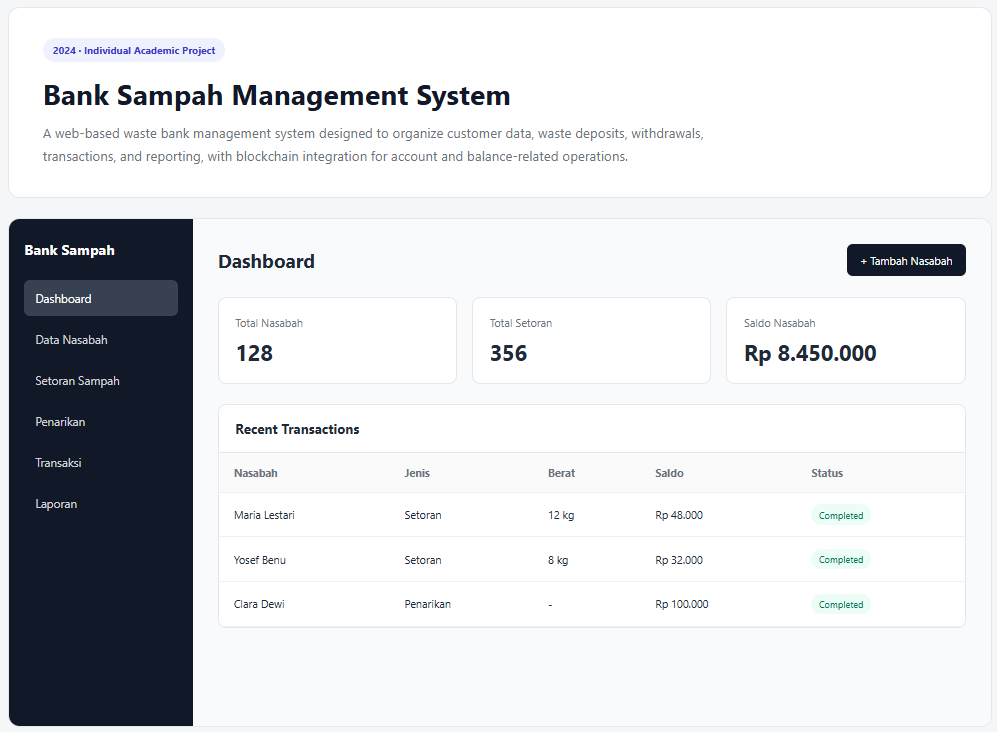
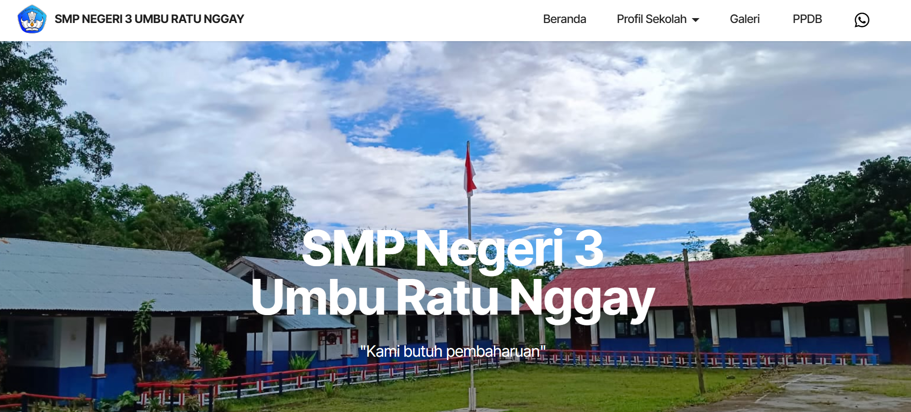
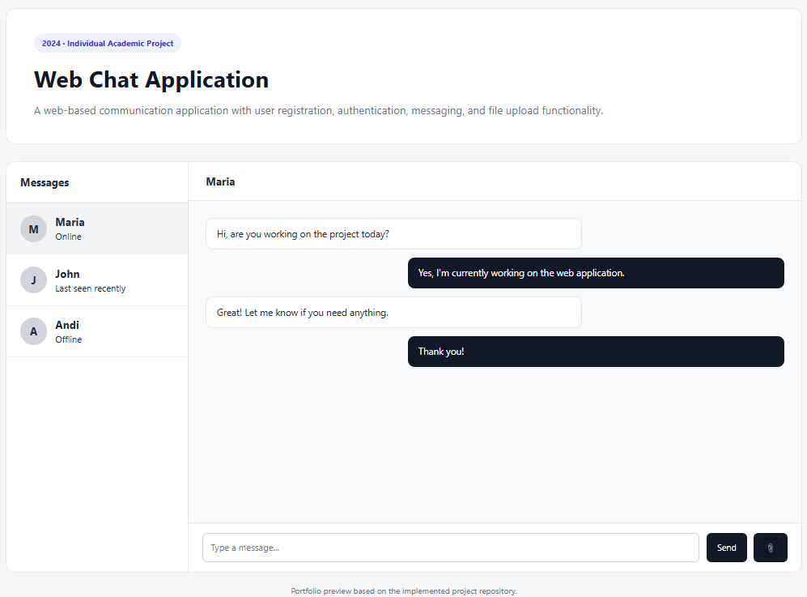
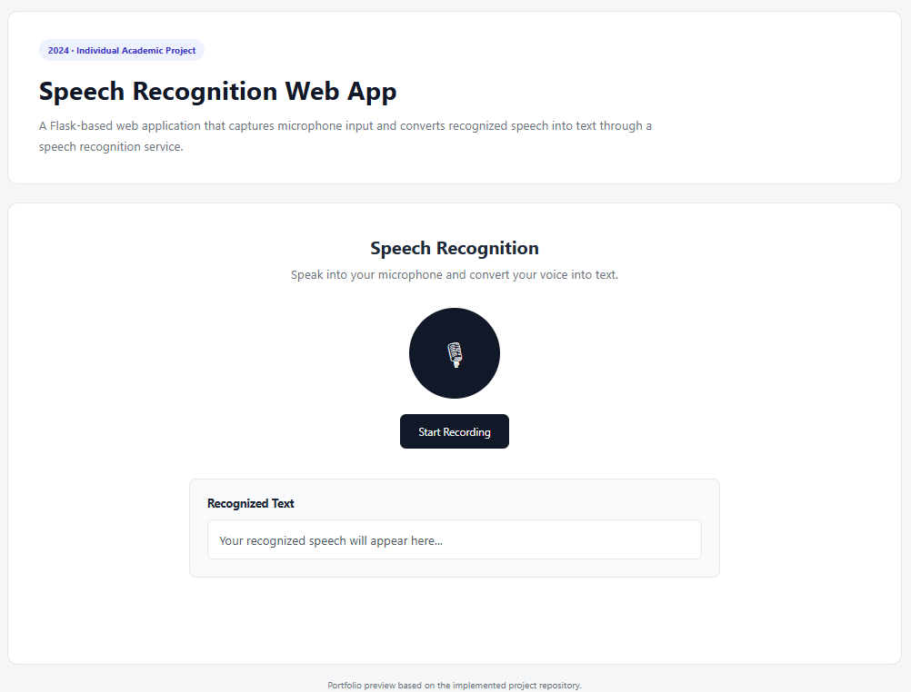
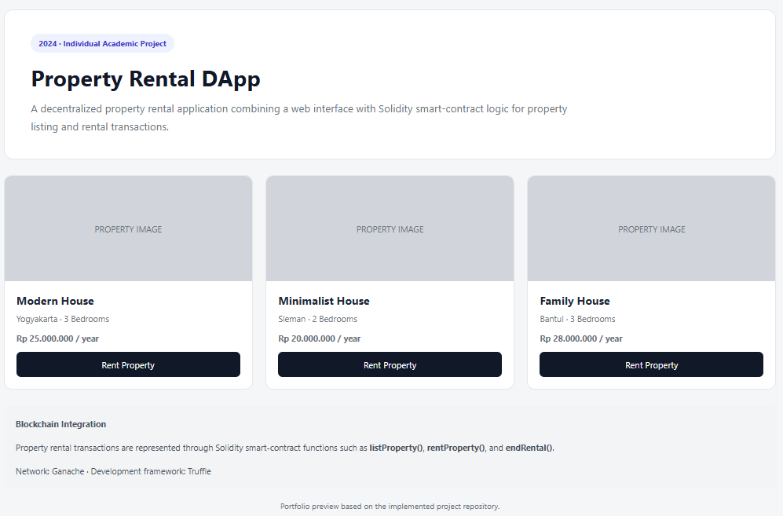
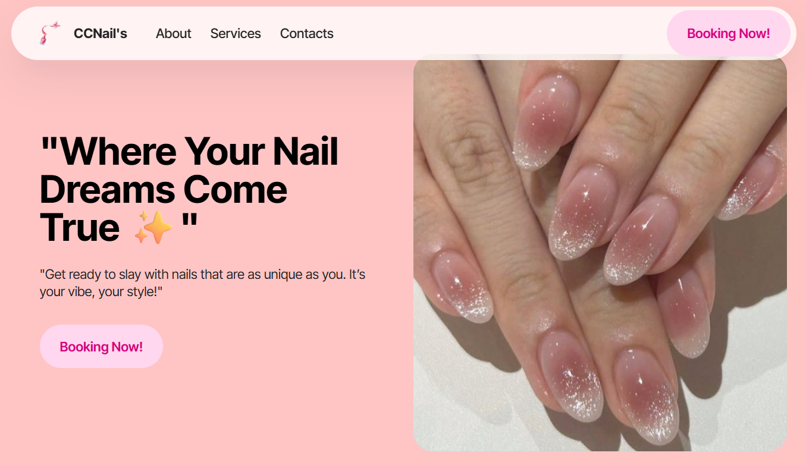
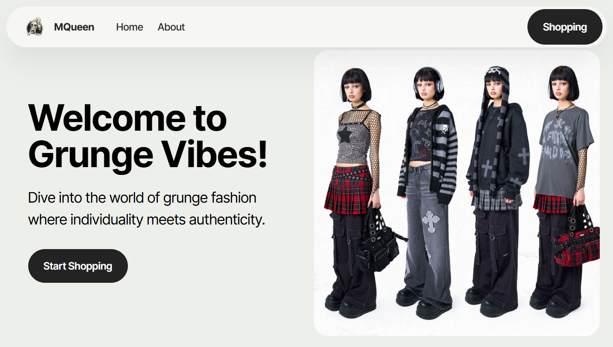

Bank Sampah Management System
Sistem informasi berbasis web untuk mengelola nasabah, jenis sampah, setoran, penarikan, transaksi, laporan, autentikasi, dan validasi. Proyek juga mengeksplorasi integrasi smart contract Solidity.
Berikut beberapa proyek yang saya kerjakan.

Sistem informasi berbasis web untuk mengelola nasabah, jenis sampah, setoran, penarikan, transaksi, laporan, autentikasi, dan validasi. Proyek juga mengeksplorasi integrasi smart contract Solidity.

Website untuk memperkenalkan profil sekolah, visi dan misi, sejarah, struktur organisasi, fasilitas, galeri, PPDB, serta informasi kontak dan lokasi. Dibuat menggunakan Mobirise dengan kustomisasi web tambahan.

Aplikasi chat berbasis web yang dikembangkan untuk mengeksplorasi komunikasi digital dan alur interaksi pengguna, mencakup registrasi, autentikasi, pesan, upload file, dan integrasi database.

Aplikasi web berbasis Flask yang menangkap input suara melalui mikrofon dan mengubahnya menjadi teks menggunakan layanan speech recognition.

Aplikasi terdesentralisasi yang mengeksplorasi proses listing dan rental properti melalui antarmuka web dan smart contract Solidity, termasuk alur transaksi dan blockchain events.

Website project yang dikembangkan dan dipublikasikan melalui GitHub Pages. Detail proyek dapat dilihat langsung melalui versi live dan repository.

Website project yang dikembangkan dan dipublikasikan melalui GitHub Pages. Detail proyek dapat dilihat langsung melalui versi live dan repository.